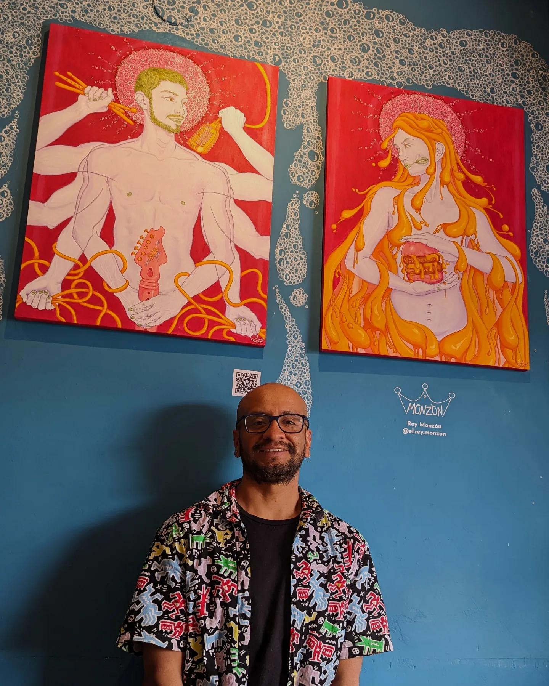
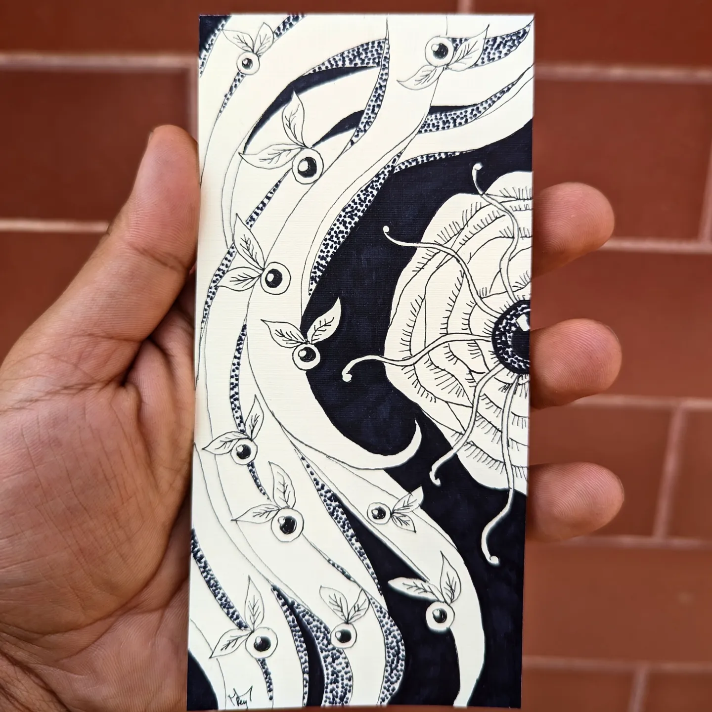
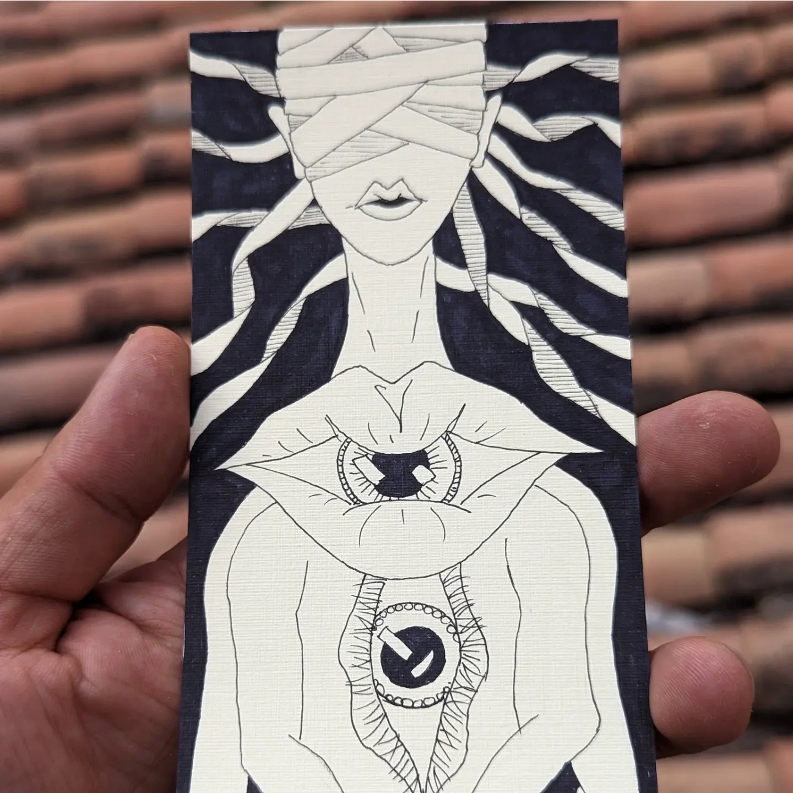
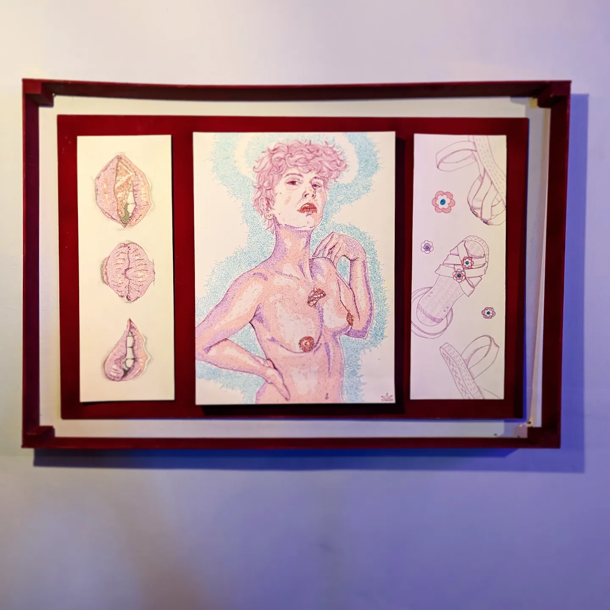
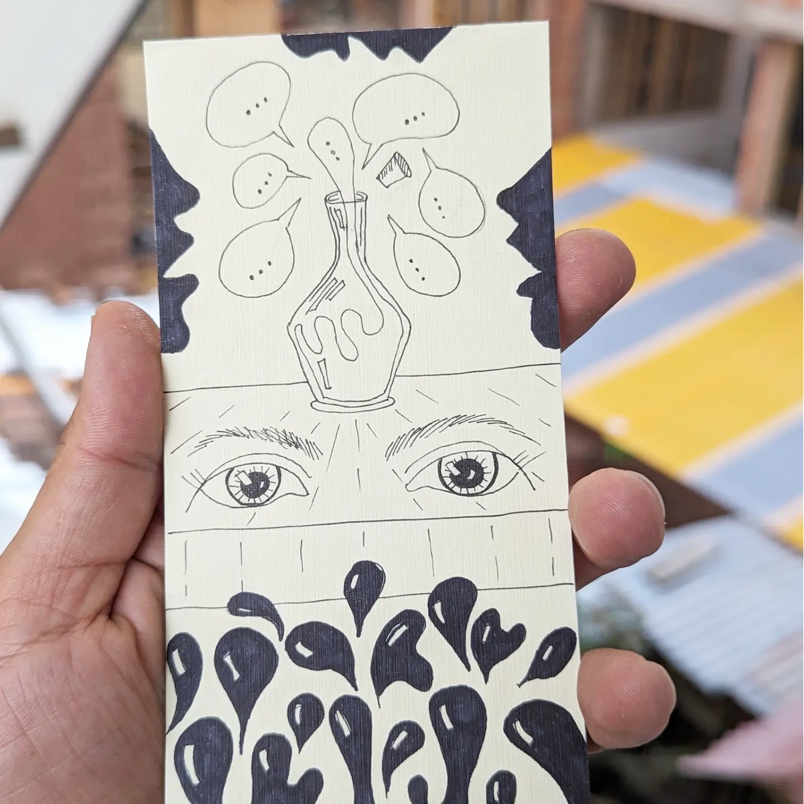
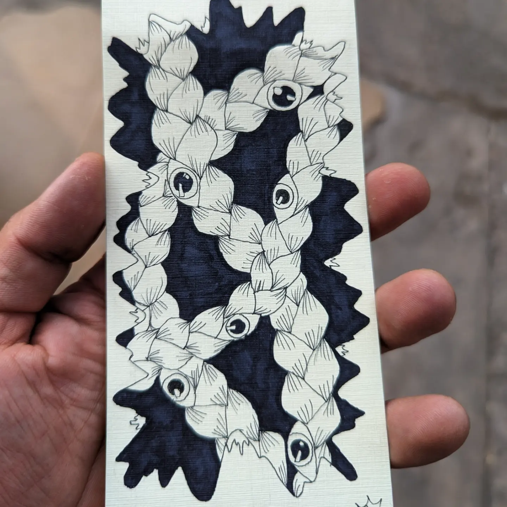

El estudio
Un universo visual donde lo cotidiano, lo íntimo y lo andino se encuentran en color.
A — Obra seleccionada
Proyectos
recientes
Una selección de piezas, murales y exploraciones gráficas.

B — El artista
Narrar desde
el color.
Reynaldo Monzón Fernández Baca es un artista visual cusqueño, graduado de la Universidad Nacional Diego Quispe Tito del Cusco.
Su práctica cruza dibujo, pintura, ilustración e intervención mural. Figuras humanas, símbolos orgánicos, memoria e identidad andina conviven en composiciones donde el color funciona como lenguaje y territorio.
Desde Cusco, desarrolla imágenes que conectan experiencias íntimas con relatos colectivos. Cada pieza propone un espacio para mirar, recordar y reconocerse.
- Formación
- Universidad Nacional Diego Quispe Tito del Cusco
- Práctica
- Pintura · Ilustración · Muralismo
- Territorio
- Cusco · Perú
C — Proceso
Pequeños
universos
Estudios en tinta: ojos, flores, hilos y silencios.





MuralismoCusco, Perú
El muro comomemoria colectiva.
D — Contacto
Hagamos algo
inolvidable.
Para murales, exposiciones, colaboraciones y proyectos especiales.
Conversemos